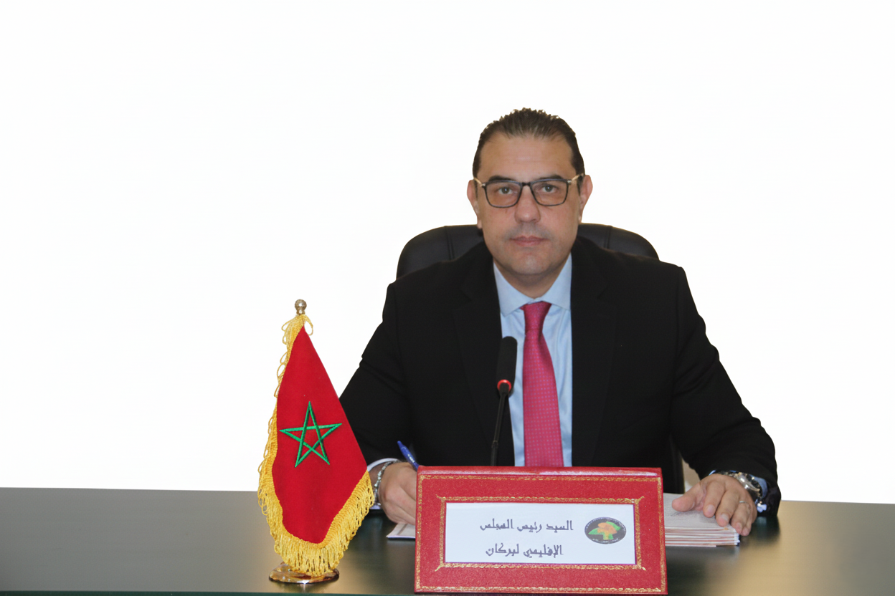

Le Conseil Provincial
Mot du Président

À l'occasion du lancement du site web officiel, j'ai le plaisir de vous accueillir tous, à travers ce discours d'ouverture, sur le portail électronique du Conseil Provincial de Berkane. Le lancement de ce site constitue une étape concrète dans le cadre des efforts du Conseil visant à moderniser l'administration provinciale et à renforcer son ouverture aux citoyens, tant à l'intérieur qu'à l'extérieur du pays.
Ce lancement s'inscrit dans la lignée de l'orientation stratégique nationale vers la transformation numérique, et notre conviction que la numérisation de l'administration est devenue un levier essentiel pour le développement des services publics, la facilitation de l'accès à l'information et la consécration des principes de transparence et de bonne gouvernance. Pour atteindre ces objectifs, le Conseil a adopté une vision de communication moderne qui dépasse les méthodes traditionnelles, en fournissant une plateforme numérique complète permettant aux citoyens et aux usagers de consulter les documents officiels, de suivre les activités et les projets de développement, et d'interagir directement avec leur institution élue.
Ce portail vise à être une fenêtre ouverte et fonctionnelle, offrant des informations précises et transparentes sur les travaux du Conseil, et fournissant des canaux efficaces de communication, d'expression d'opinions et de participation, contribuant ainsi à renforcer la confiance et la relation entre le Conseil et son environnement. Le site constituera également une source officielle pour la publication d'annonces, d'actualités et la fourniture d'éclaircissements concernant les affaires provinciales, contribuant ainsi à l'établissement d'un modèle avancé de communication institutionnelle.
À travers cette plateforme, le Conseil aspire également à établir un modèle avancé de communication publique, en fournissant des informations actualisées sur les programmes et les projets, et en permettant à chaque visiteur de suivre les diverses initiatives de développement supervisées par le Conseil. Le site constitue un mécanisme moderne pour soutenir les principes de transparence et permettre au citoyen de participer activement au suivi des affaires locales, en accord avec les défis de l'ère numérique et les exigences de la bonne gouvernance.
Le lancement de ce portail électronique n'est pas une fin en soi, mais une étape dans une vision globale et continue de modernisation de l'administration provinciale, d'amélioration de ses services, de renforcement de la proximité avec les citoyens et de facilitation de la communication avec les partenaires et les acteurs. Nous nous engageons à ce que le Conseil continue de travailler au développement de cette plateforme et à l'amélioration continue de son contenu et de ses fonctionnalités, afin qu'elle soit une interface numérique digne de la province de Berkane et des aspirations de ses habitants.
Président du Conseil Provincial de
Berkane
Monsieur
Mohamed Jaloul
Les Membres du Conseil
[La liste des membres du conseil sera affichée ici. Chaque membre aura sa photo, son nom et sa commission d'appartenance.]